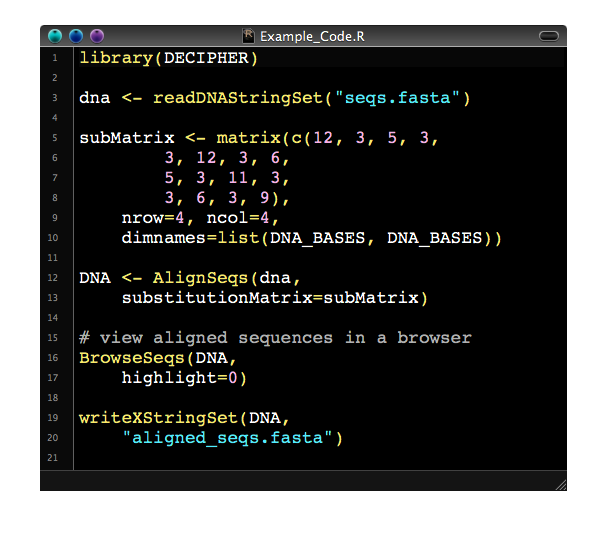
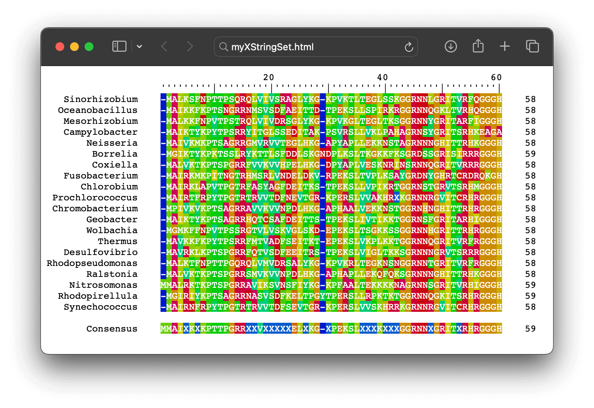
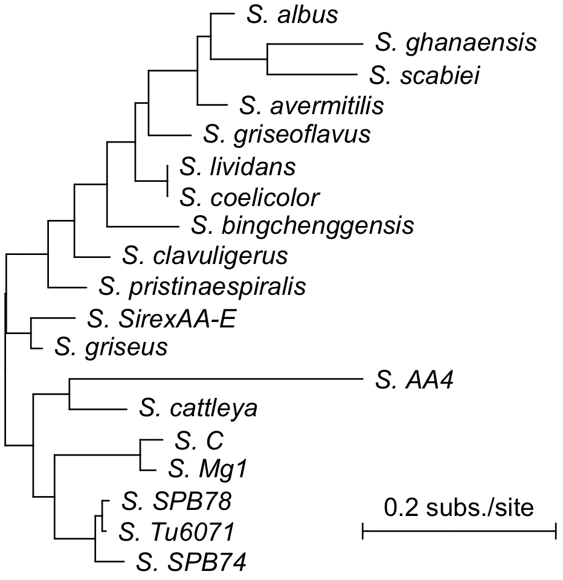
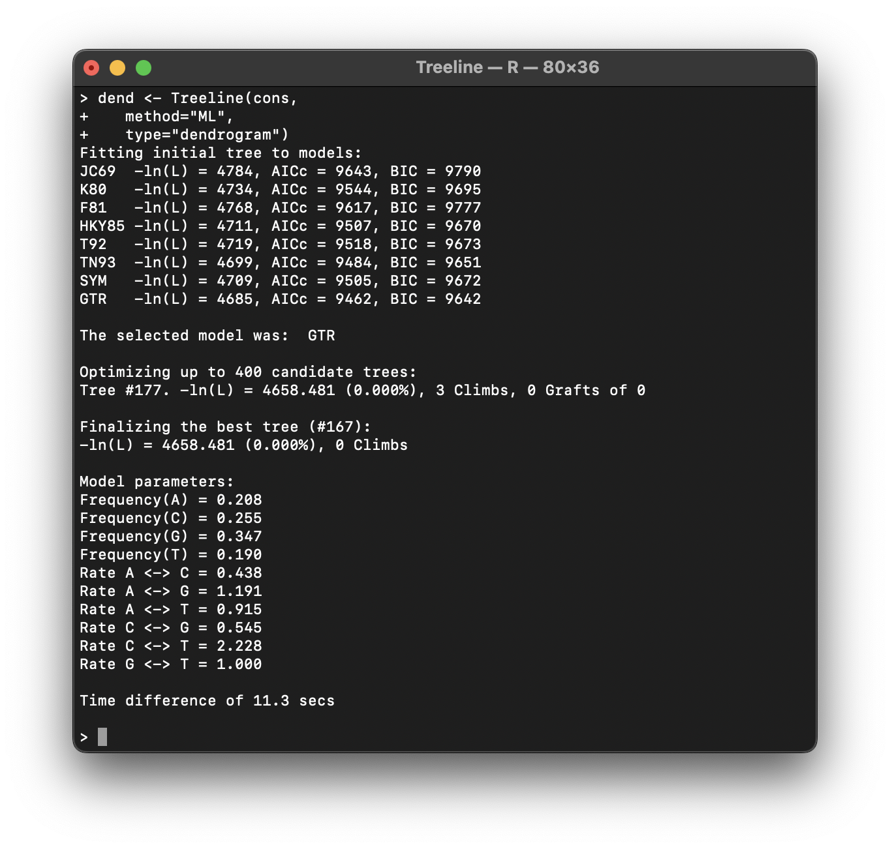
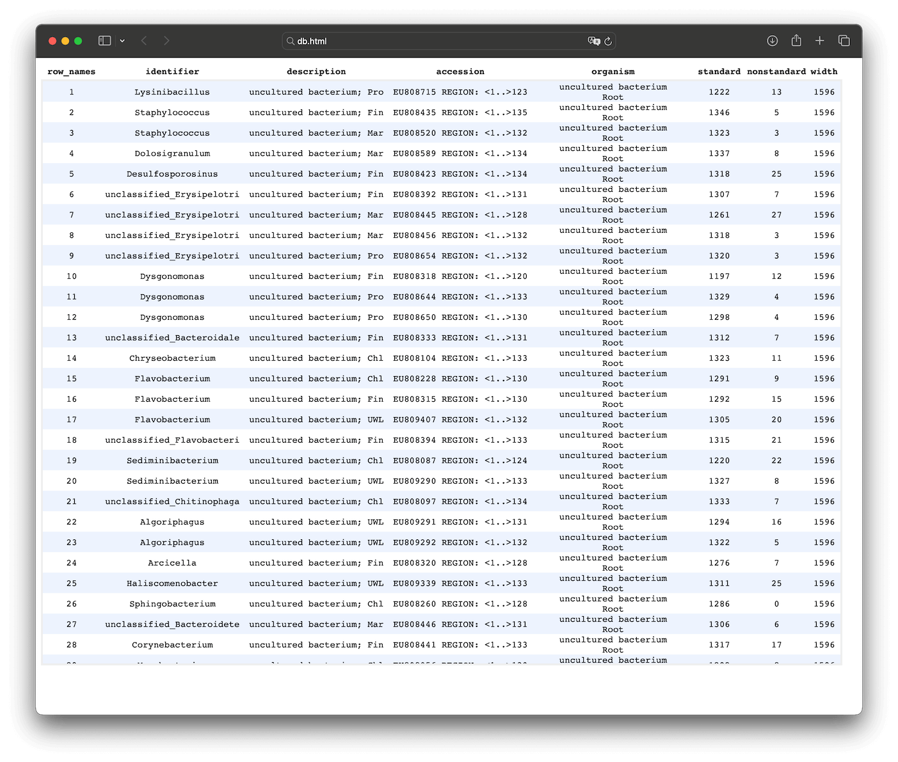
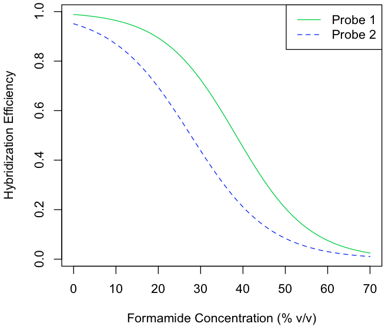
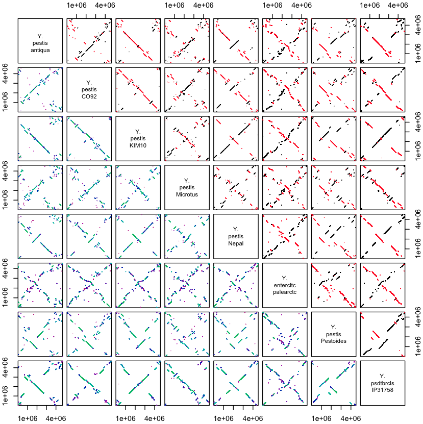
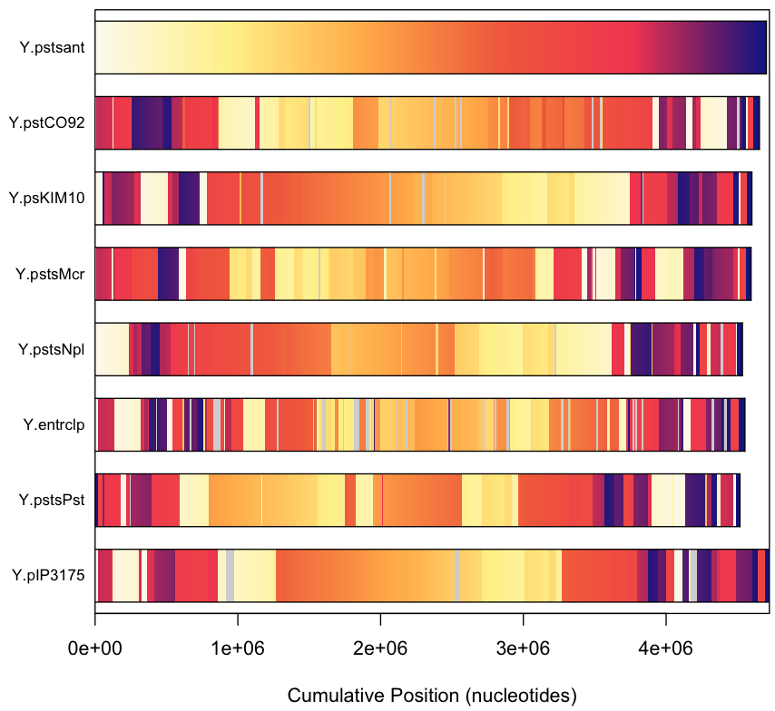
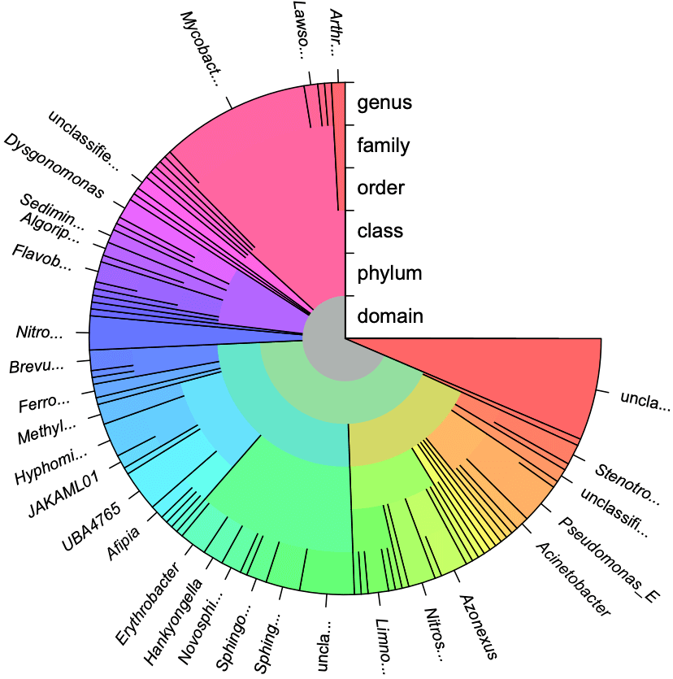

Examples Gallery
This gallery showcases the DECIPHER package for R in action.To install and start using the DECIPHER software package for R, visit the Downloads page. There you will find several vignettes that describe how to use DECIPHER within the R environment to accomplish various tasks. The R programming language provides access to many powerful tools, making it well suited for a wide variety of analyses.

Using the BrowseSeqs function to view sequences in a browser (full page, example code).

Plotting the output of the MeltDNA function for two alleles (example code). The lines represent the predicted melt curves, which could be experimentally verified with Quantitative PCR.

Creating a maximum likelihood tree of different Streptomyces species with the Treeline function (example code).

DECIPHER's outputs when generating the phylogenetic tree above.

Maintaining and adding to a database of sequences (full page, example code). Each row provides information for a unique sequence in the database.

Predicting the melt curves for two FISH probes (example code). Probe 2 melts at a less stringent condition than Probe 1.

Dot plots showing the syntenic blocks among multiple Yersinia genomes, as identified by the FindSynteny function (example code). Black diagonal lines show syntenic regions sharing the same orientation, whereas red anti-diagonal lines represent blocks of synteny between opposite strands.

Bar plots providing an alternative representation of the synteny map shown above. Each genome is colored according to the position of the corresponding region in the first genome, or grey if a region is unshared.

Estimated dN/dS (ω) ratios for every codon in the Influenza A hemagglutinin protein coding sequence (example code).

Starburst diagram showing the predicted taxonomic classification for a set of 16S ribosomal RNA sequences (example code).